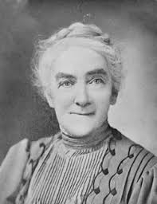

Biography
Ellen Swallow richards was born on December 3, 1842 in Massachusetts. She paved the way for for women who were interested in science education and professions. She attended Vassar college in 1870 and then went onto become one of the first women ever to attend the Massachusetts Institute of Technology (MIT) in Cambridge, MA. She graduated in 1873, receiving a bachelor degree in science. She later on became a teacher at MIT and in 1876 founded a woman’s laboratory at MIT. Additionally, she started a program in Boston public schools that prepared young women for education in fields of science.
During her time at MIT, Richards taught sanitation chemistry (1884-1911). She also established the first sanitary engineering program at MIT.
Later in her life, Ellen Swallow Richards established a scientific basis for home economics. She worked on projects like studying the adulteration of groceries and arsenic content of wallpaper and fabrics. Ellen also promoted good nutrition. She founded and led the Lake Placid Conference on Home Economics (1899-1908), where she developed standards for training professionals.
On March 30, 1911, Ellen Swallow Richards passed away due to heart disease. Her legacy consists of various published works and her having helped pave a path to scientific education and jobs for women.